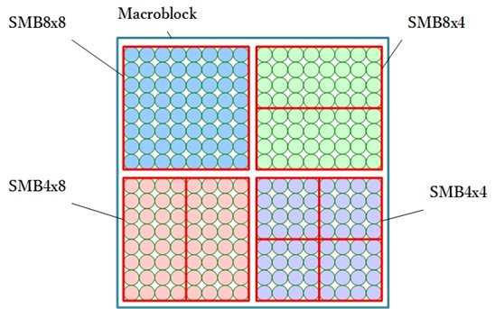
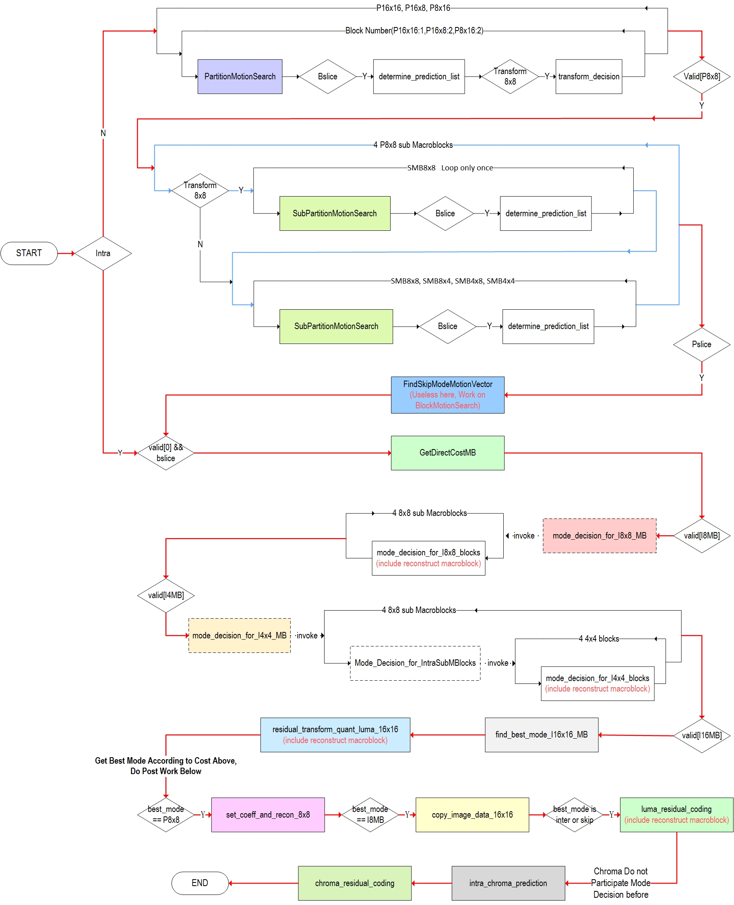
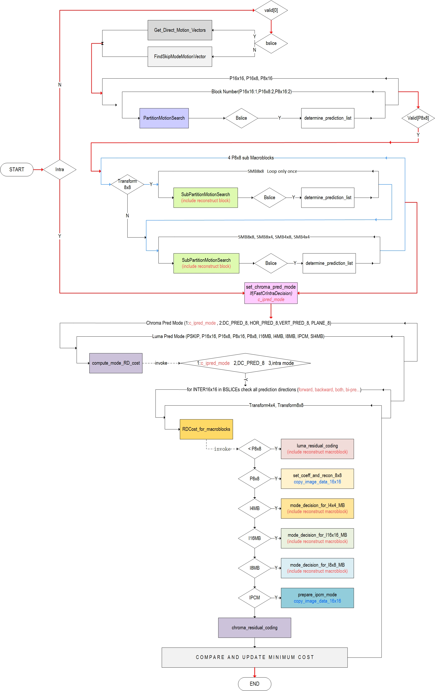
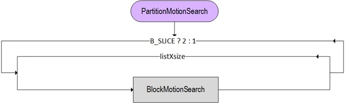
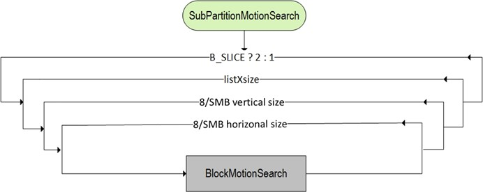

正文
- h.264的POC计算
- 指数哥伦布编码
- h.264加权预测
- h.264码率控制
- h.264直接预测
- h.264 FMO
- h.264参考图像列表、解码图像缓存
- h.264 mvp求解过程
- UMHexagonS搜索过程
- h.264全搜索以及快速全搜索算法
- h.264 率失真优化
- EPZS搜索过程
- Intra Chroma Prediction
- Intra Luma Prediction
- H.264 Transform
- H.264 Quantization
- Quantization Method
- h.264 Mode Decision
- h.264 Bi-Predictive Motion Search
- h.264语法结构分析
- h.264宏块与子宏块类型
- h.264 scanning process for transform coefficients
- CAVLC
- CABAC
- 算术编码JM实现
- h.264并行解码算法分析
- h.264 去块滤波
- h.264并行解码算法2D-Wave实现（基于多核非共享内存系统）
- h.264并行解码算法2D-Wave实现（基于多核共享内存系统）
- h.264并行解码算法3D-Wave实现（基于多核共享内存系统）
- h.264并行熵解码
- CABAC总结与补充讨论
- ffmpeg h264并行解码
- ffmpeg h.264解码所用的主要缓冲区介绍

Mode Decision(模式选择)决定一个宏块以何种类型进行分割。宏块的分割类型有以下几种：
//P_Skip and B_Skip means that nothing need to be encoded for this macroblock ,
// just use the mv predicted to restruct the macroblock
//B_Direct means use no mvd and no refidx,
// just use the mv abtain from Direct Algorithm and the residue mb
// base on such mv to restruct the macroblock.
// On Direct mode, we need to encode redisual
enum {
PSKIP = 0, //encode nothing
BSKIP_DIRECT = 0, //skip means encode nothing, direct means encode residual
P16x16 = 1, //16x16 on p or b slice
P16x8 = 2, //16x8 on p or b slice
P8x16 = 3, //8x16 on p or b slice
SMB8x8 = 4, //sub macroblock 8x8 on p or b slice
SMB8x4 = 5, //sub macroblock 8x4 on p or b slice
SMB4x8 = 6, //sub macroblock 4x8 on p or b slice
SMB4x4 = 7, //sub macroblock 4x4 on p or b slice
P8x8 = 8, //set of sub macroblock modes
I4MB = 9, //4x4 on i slice
I16MB = 10, //16x16 on i slice
IBLOCK = 11, //the same with I4MB
SI4MB = 12, //
I8MB = 13, //8x8 on i slice
IPCM = 14, //PCM mode
MAXMODE = 15
} MBModeTypes;
模式选择就是通过某种算法得到最优的宏块分割类型。不同算法在流程、最优分割方式选择上会有区别，但是都遵循h.264的标准。
宏块与子宏块
macroblock_layer( ) {
mb_type
if( mb_type = = I_PCM ) {
while( !byte_aligned( ) )
pcm_alignment_zero_bit
for( i = 0; i < 256; i++ )
pcm_sample_luma[ i ]
for( i = 0; i < 2 * MbWidthC * MbHeightC; i++ )
pcm_sample_chroma[ i ]
} else {
noSubMbPartSizeLessThan8x8Flag = 1
if( mb_type != I_NxN &&
MbPartPredMode( mb_type, 0 ) != Intra_16x16 &&
NumMbPart( mb_type ) = = 4 ) {
sub_mb_pred( mb_type ) //子宏块预测
for( mbPartIdx = 0; mbPartIdx < 4; mbPartIdx++ )
if( sub_mb_type[ mbPartIdx ] != B_Direct_8x8 ) {
if( NumSubMbPart( sub_mb_type[ mbPartIdx ] ) > 1 )
noSubMbPartSizeLessThan8x8Flag = 0
} else if( !direct_8x8_inference_flag )
noSubMbPartSizeLessThan8x8Flag = 0
} else {
if( transform_8x8_mode_flag && mb_type = = I_NxN )
transform_size_8x8_flag
mb_pred( mb_type ) //宏块预测
}
if( MbPartPredMode( mb_type, 0 ) != Intra_16x16 ) {
coded_block_pattern
if( CodedBlockPatternLuma > 0 &&
transform_8x8_mode_flag && mb_type != I_NxN &&
noSubMbPartSizeLessThan8x8Flag &&
( mb_type != B_Direct_16x16 | | direct_8x8_inference_flag ) )
transform_size_8x8_flag
}
if( CodedBlockPatternLuma > 0 | | CodedBlockPatternChroma > 0 | | MbPartPredMode( mb_type, 0 ) = = Intra_16x16 ) {
mb_qp_delta
residual( )
}
}
}
上面是宏块层的语法，可以看到宏块预测可以分为两大类：宏块预测、子宏块预测，这两类预测是相互独立的。有兴趣可以去查看宏块结构（h.264语法结构分析的slice_data之后的部分）、宏块与子宏块类型（h.264宏块与子宏块类型）
子宏块类型则可以统一为一种类型P8x8，每个宏块有4个P8x8的子宏块，4个子宏块独立进行子宏块预测，每个子宏块都可以为不同的子宏块类型。

Chroma模式选择
Chroma宏块只分为intra与inter两种类型，并不再细分。标准规定了Chroma宏块的预测方式是受到luma的预测方式的制约的。当luma是以intra进行预测时，chroma宏块才会进行intra预测；当luma是以inter进行预测时，chroma宏块进行的是inter预测（Chroma inter预测不会自行预测，而是通过luma预测结果进行缩放处理后得到的Chroma mv）。
宏块预测中，只有I4MB, I16MB, I8MB时Chroma宏块才会采用intra预测：
//只有当luma的预测模式为intra时，才会进行Chroma的intra预测
mb_pred( mb_type ) {
if( MbPartPredMode( mb_type, 0 ) = = Intra_4x4 | |
MbPartPredMode( mb_type, 0 ) = = Intra_8x8 | |
MbPartPredMode( mb_type, 0 ) = = Intra_16x16 ) {
if( MbPartPredMode( mb_type, 0 ) = = Intra_4x4 )
for( luma4x4BlkIdx=0; luma4x4BlkIdx<16; luma4x4BlkIdx++ ) {
prev_intra4x4_pred_mode_flag[ luma4x4BlkIdx ]
if( !prev_intra4x4_pred_mode_flag[ luma4x4BlkIdx ] )
rem_intra4x4_pred_mode[ luma4x4BlkIdx ]
}
if( MbPartPredMode( mb_type, 0 ) = = Intra_8x8 )
for( luma8x8BlkIdx=0; luma8x8BlkIdx<4; luma8x8BlkIdx++ ) {
prev_intra8x8_pred_mode_flag[ luma8x8BlkIdx ]
if( !prev_intra8x8_pred_mode_flag[ luma8x8BlkIdx ] )
rem_intra8x8_pred_mode[ luma8x8BlkIdx ]
}
if( chroma_format_idc != 0 )
intra_chroma_pred_mode
} else if( MbPartPredMode( mb_type, 0 ) != Direct ) {
for( mbPartIdx = 0; mbPartIdx < NumMbPart( mb_type ); mbPartIdx++)
if( ( num_ref_idx_l0_active_minus1 > 0 | |
mb_field_decoding_flag ) &&
MbPartPredMode( mb_type, mbPartIdx ) != Pred_L1 )
ref_idx_l0[ mbPartIdx ]
for( mbPartIdx = 0; mbPartIdx < NumMbPart( mb_type ); mbPartIdx++)
if( ( num_ref_idx_l1_active_minus1 > 0 | |
mb_field_decoding_flag ) &&
MbPartPredMode( mb_type, mbPartIdx ) != Pred_L0 )
ref_idx_l1[ mbPartIdx ]
for( mbPartIdx = 0; mbPartIdx < NumMbPart( mb_type ); mbPartIdx++)
if( MbPartPredMode ( mb_type, mbPartIdx ) != Pred_L1 )
for( compIdx = 0; compIdx < 2; compIdx++ )
mvd_l0[ mbPartIdx ][ 0 ][ compIdx ]
for( mbPartIdx = 0; mbPartIdx < NumMbPart( mb_type ); mbPartIdx++)
if( MbPartPredMode( mb_type, mbPartIdx ) != Pred_L0 )
for( compIdx = 0; compIdx < 2; compIdx++ )
mvd_l1[ mbPartIdx ][ 0 ][ compIdx ]
}
}
子宏块预测中没有Chroma intra预测：
//可以看到子宏块预测时，没有Chroma的intra预测
sub_mb_pred( mb_type ) {
for( mbPartIdx = 0; mbPartIdx < 4; mbPartIdx++ )
sub_mb_type[ mbPartIdx ]
for( mbPartIdx = 0; mbPartIdx < 4; mbPartIdx++ )
if( ( num_ref_idx_l0_active_minus1 > 0 | | mb_field_decoding_flag ) &&
mb_type != P_8x8ref0 &&
sub_mb_type[ mbPartIdx ] != B_Direct_8x8 &&
SubMbPredMode( sub_mb_type[ mbPartIdx ] ) != Pred_L1 )
ref_idx_l0[ mbPartIdx ]
for( mbPartIdx = 0; mbPartIdx < 4; mbPartIdx++ )
if( (num_ref_idx_l1_active_minus1 > 0 | | mb_field_decoding_flag ) &&
sub_mb_type[ mbPartIdx ] != B_Direct_8x8 &&
SubMbPredMode( sub_mb_type[ mbPartIdx ] ) != Pred_L0 )
ref_idx_l1[ mbPartIdx ]
for( mbPartIdx = 0; mbPartIdx < 4; mbPartIdx++ )
if( sub_mb_type[ mbPartIdx ] != B_Direct_8x8 &&
SubMbPredMode( sub_mb_type[ mbPartIdx ] ) != Pred_L1 )
for( subMbPartIdx = 0;
subMbPartIdx < NumSubMbPart( sub_mb_type[ mbPartIdx ] );
subMbPartIdx++)
for( compIdx = 0; compIdx < 2; compIdx++ )
mvd_l0[ mbPartIdx ][ subMbPartIdx ][ compIdx ]
for( mbPartIdx = 0; mbPartIdx < 4; mbPartIdx++ )
if( sub_mb_type[ mbPartIdx ] != B_Direct_8x8 &&
SubMbPredMode( sub_mb_type[ mbPartIdx ] ) != Pred_L0 )
for( subMbPartIdx = 0;
subMbPartIdx < NumSubMbPart( sub_mb_type[ mbPartIdx ] );
subMbPartIdx++)
for( compIdx = 0; compIdx < 2; compIdx++ )
mvd_l1[ mbPartIdx ][ subMbPartIdx ][ compIdx ]
}
Mode Decision
JM18.6中有几种模式选择的算法，下面来分析一下low与high这两种算法的流程。
Mode Decision Low
该过程非常主要的一个特点是Chroma不参与模式选择

简述一下Low的流程：
inter的宏块类型（P16x16, P16x8, P8x16）选择。
inter的子宏块类型（SMB8x8, SMB8x4, SMB4x8, SMB4x4）选择，每个8x8都可以独立选择不同的分割方式；如果8x8变换方式可用的话，则会多进行一次只采用SMB8x8并采用8x8变换的编码方式，由此看出8x8变换在子宏块类型中只用于SMB8x8。
Skip, FindSkipModeMotionVector此处无作用。
Direct
I8MB,在4个8x8子宏块中可以分别选择不同的预测模式，该预测模式与I4MB一样有9种；在mode_decision_for_I8x8_blocks最后会进行残差编码，宏块重建。
I4MB,在16个4x4块中可以分别选择不同的预测模式，预测模式共9种；在mode_decision_for_I4x4_blocks最后会进行残差编码，宏块重建。
I16MB,在residual_transform_quant_luma_16x16最后会进行残差计算，宏块重建。
上面的步骤已经通过rdcost选择到了最佳的宏块分割模式，这里会进行后续的参数设置，其中最主要的就是非intra模式的残差编码与宏块重建luma_residual_coding。
Chroma,可以注意到，在Low的流程中Chroma一直没有参与到模式选择当中。最后进行Chroma的intra预测，并根据前面luma所得的当前宏块为intra还是inter模式，选择相应的模式进行编码。
Mode Decision High
该过程中chroma宏块也参与模式选择。

简述一下high的流程：
SKIP, 如果是bslice调用Get_Direct_Motion_Vectors，pslice则调用FindSkipModeMotionVector获得运动向量。
inter的宏块类型（P16x16, P16x8, P8x16）选择。
inter的子宏块类型（SMB8x8, SMB8x4, SMB4x8, SMB4x4）选择，每个8x8都可以独立选择不同的分割方式；如果8x8变换方式可用的话，则会多进行一次只采用SMB8x8并采用8x8变换的编码方式，由此看出8x8变换在子宏块类型中只用于SMB8x8。
chroma预测模式，如果指定了FastCrIntraDecision，则挑选出最佳的chroma模式，否则得到的是chroma模式的范围（DC_PRED_8 ~ PLANE_8）。
根据所得到的chroma模式范围进行循环。
在所有luma 模式中选择最佳的模式。
compute_mode_RD_cost中首先筛选chroma模式，只有三种情况才可以往下选择最佳luma模式：
- FastCrIntraDecision，表明只有一次chroma循环，并且循环前已经选出了最佳的chroma模式；
- DC_PRED_8，chroma DC模式可以搭配所有的luma模式；
- intra，luma intra模式可以搭配所有的chroma intra模式。
Bslice & P16x16的情况，再次(?)检查forward,backward,both,bi-pred中，哪种方式最佳。
如果输入参数指定了transform 8x8，那么对transform8x8与transform4x4分别计算残差。
< P8x8,也就是P16x16, P16x8, P8x16的残差编码，宏块重建。
P8x8,也就是SMB8x8, SMB8x4, SMB4x8, SMB4x4宏块重建，他们的残差计算在子宏块预测时已经计算编码过，并且得到了子宏块的重建块，所以这里只是单纯把子宏块的重建块合并起来。
I4MB,在16个4x4块中可以分别选择不同的预测模式，预测模式共9种；在mode_decision_for_I4x4_blocks最后会进行残差编码，宏块重建。
I16MB,在residual_transform_quant_luma_16x16最后会进行残差编码，宏块重建。
I8MB,在4个8x8子宏块中可以分别选择不同的预测模式，该预测模式与I4MB一样有9种；在mode_decision_for_I8x8_blocks最后会进行残差编码，宏块重建。
IPCM，重建块就是编码块。
Chroma残差编码，其实函数内部分别包含了intra与inter的预测。只有luma在intra模式下，才能进行chroma的intra预测。最后进行chroma的残差编码，宏块重建。
在每个luma模式最后，都计算出rdcost，然后与前面得到的最低rdcost比较，选择最佳的分割模式。
LOW与HIGH的共同点
可以看到他们在inter模式选择时流程大致一样的。先得到宏块的最佳分割模式，然后得到4个子宏块的最佳分割模式。下面大致浏览一下PartitionMotionSearch与SubPartitionMotionSearch的流程。
 LOW与HIGH的不同点
不同点大致分为流程上，最优分割模式选择（计算rdcost）的差异。
- Low在对每种分割模式预测完后，立刻进行rdcost计算，用得到的rdcost对比前面已经得到的最佳cost，从而得到最佳模式。在得到最佳模式后，再进行残差编码与重建。
- High统一把对比cost并得到最佳模式这个过程写到compute_mode_RD_cost里面。在前面进行完成运动预测后，进入该函数对9种分割模式进行残差编码，宏块重建，cost计算与对比。其中4种intra分割模式是在这个函数内部才分别进行预测的。
- Low的rdcost计算并不像high的那么严谨，只是简单地算出distortion与残差系数以外的bit数。Low的rdcost不包括chroma所占用的bit。
- High的rdcost会计算经由熵编码后得到的bit，并且包含了chroma所占用的bit，因此更加精准。但是也会相应地增加编码时间。
宏块重建
宏块重建是指把宏块反量化、反变换后得到的残差，加上参考帧中对应运动向量位置的宏块后重新构建当前宏块的过程。该过程一般处于反量化、反变换步骤之后，而反量化、反变换处于变换、量化这两个过程之后，即残差编码过程之内。因此，残差编码与宏块重建基本上都是一起进行的。
/*!
- \brief
- The routine performs transform,quantization,inverse transform,
- adds the diff to the prediction and writes the result to the
- decoded luma frame.
- \par Input:
- currMB: Current macroblock.
- pl: Color plane for 4:4:4 coding.
- block_x,block_y: Block position inside a macro block (0,4,8,12).
- intra: Intra block indicator.
- \par Output_
- nonzero: 0 if no levels are nonzero. \n
1 if there are nonzero levels.\n- coeff_cost: Coeff coding cost for thresholding consideration.\n
*/
int residual_transform_quant_luma_4x4(Macroblock *currMB, ColorPlane pl, int block_x,int block_y, int *coeff_cost, int intra)
{
int nonzero = FALSE;
int pos_x = block_x >> BLOCK_SHIFT;
int pos_y = block_y >> BLOCK_SHIFT;
int b8 = 2*(pos_y >> 1) + (pos_x >> 1) + (pl<<2);
int b4 = 2*(pos_y & 0x01) + (pos_x & 0x01);
Slice *currSlice = currMB->p_Slice;
VideoParameters *p_Vid = currSlice->p_Vid;
imgpel **img_enc = p_Vid->enc_picture->p_curr_img;
imgpel **mb_pred = currSlice->mb_pred[pl];
int **mb_ores = currSlice->mb_ores[pl];
if (check_zero(&mb_ores[block_y], block_x) != 0) // check if any coefficients in block
{
int **mb_rres = currSlice->mb_rres[pl];
int max_imgpel_value = p_Vid->max_imgpel_value;
int qp = (p_Vid->yuv_format==YUV444 && !currSlice->P444_joined)? currMB->qp_scaled[(int)(p_Vid->colour_plane_id)]: currMB->qp_scaled[pl];
QuantParameters *p_Quant = p_Vid->p_Quant;
QuantMethods quant_methods;
quant_methods.ACLevel = currSlice->cofAC[b8][b4][0];
quant_methods.ACRun = currSlice->cofAC[b8][b4][1];
//block_x,block_y here is the position of a block on a Macroblock with the unit of pixel
quant_methods.block_x = block_x;
quant_methods.block_y = block_y;
quant_methods.qp = qp;
quant_methods.q_params = p_Quant->q_params_4x4[pl][intra][qp];
quant_methods.fadjust = p_Vid->AdaptiveRounding ? (&p_Vid->ARCofAdj4x4[pl][currMB->ar_mode][block_y]) : NULL;
quant_methods.coeff_cost = coeff_cost;
quant_methods.pos_scan = currMB->is_field_mode ? FIELD_SCAN : SNGL_SCAN;
quant_methods.c_cost = COEFF_COST4x4[currSlice->disthres];
currMB->subblock_x = ((b8&0x1)==0) ? (((b4&0x1)==0)? 0: 4) : (((b4&0x1)==0)? 8: 12); // horiz. position for coeff_count context
currMB->subblock_y = (b8<2) ? ((b4<2) ? 0: 4) : ((b4<2) ? 8: 12); // vert. position for coeff_count context
// Forward 4x4 transform
forward4x4(mb_ores, currSlice->tblk16x16, block_y, block_x);
// Quantization process
nonzero = currSlice->quant_4x4(currMB, &currSlice->tblk16x16[block_y], &quant_methods);
// Decoded block moved to frame memory
if (nonzero)
{
// Inverse 4x4 transform
inverse4x4(currSlice->tblk16x16, mb_rres, block_y, block_x);
// generate final block
sample_reconstruct (&img_enc[currMB->pix_y + block_y], &mb_pred[block_y], &mb_rres[block_y], block_x, currMB->pix_x + block_x, BLOCK_SIZE, BLOCK_SIZE, max_imgpel_value, DQ_BITS);
}
else // if (nonzero) => No transformed residual. Just use prediction.
{
copy_image_data_4x4(&img_enc[currMB->pix_y + block_y], &mb_pred[block_y], currMB->pix_x + block_x, block_x);
}
}
else
{
currSlice->cofAC[b8][b4][0][0] = 0;
copy_image_data_4x4(&img_enc[currMB->pix_y + block_y], &mb_pred[block_y], currMB->pix_x + block_x, block_x);
}
return nonzero;
}
欧长坤 © 2016-2025 版权所有， 采用知识共享署名-非商业性使用-禁止演绎 4.0 国际许可协议许可，代码使用 MIT 协议开源。
如果你认为本书对你起到了帮助，可以资助作者。